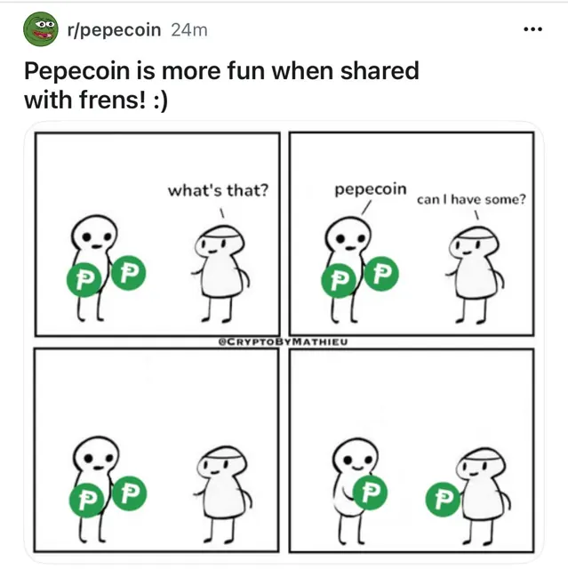

Pepecoin × Tangem card
A Tangem card in the Pepecoin design, sold in the official Pepecoin Shop. The keys stay on the card, and you use it with the Tangem app on your phone.
The card in the Pepecoin Shopshop.pepecoin.comGuide
PEP lives on its own blockchain, so it needs a wallet that supports the Pepecoin network. Ethereum wallets such as MetaMask hold Ethereum tokens like PEPE, not PEP.
A Tangem card in the Pepecoin design, sold in the official Pepecoin Shop. The keys stay on the card, and you use it with the Tangem app on your phone.
The card in the Pepecoin Shopshop.pepecoin.comThe reference software from the Pepecoin developers. It downloads and checks the whole blockchain and keeps your keys on your computer. Before you run the installer, check that its SHA256 hash matches the line for that file in SHA256SUMS.asc on the same release page.
Download on GitHubTangem added the Pepecoin network to its app, so standard Tangem cards hold PEP as well.
Tangem: PepecoinA multi-coin mobile wallet, listed among the PEP wallets on pepecoin.com.
coinomi.comListed among the PEP wallets on pepecoin.com.
nintondo.ioA wallet for PEP, DOGE, BTC and LTC. Its maker says you control your keys and need no account or signup.
hazewallet.comWallets as listed on pepecoin.com on October 6, 2026, plus the card from the official Pepecoin Shop and Haze Wallet. A listing here is not a recommendation.
Right frog, right pond
| Asset | Network and address | Wallets |
|---|---|---|
| PEP · Pepecoin | Pepecoin blockchain, address starts with P | Pepecoin Core, Tangem (incl. the Pepecoin card), Coinomi, Nintondo |
| PEPE · Pepe | Ethereum, address starts with 0x | Ethereum wallets such as MetaMask |
| PEPECOIN | Ethereum, address starts with 0x | Ethereum wallets such as MetaMask |
Keys, not apps

Comic: @CryptoByMathieu, shared on r/pepecoin

Scam alert
Hang up, fren. Anyone holding your recovery phrase can take the coins. This site never asks for a seed phrase or a password, and never holds anyone’s coins. Nobody legit ever will ask.
No. MetaMask is built for Ethereum-type networks, and Pepecoin is not among the other networks it supports. PEP needs a wallet with the Pepecoin network. MetaMask is the kind of wallet that holds PEPE and PEPECOIN, which are Ethereum tokens.
A co-branded Tangem cold wallet in the Pepecoin design (2025 edition), sold in the official Pepecoin Shop. It works like any Tangem card: the keys stay on the card and you use it with the Tangem app.
No. Pepecoin Core is the official wallet and a full node, which also helps the network, but card and mobile wallets hold PEP too.
From the official GitHub releases for pepecoinppc/pepecoin. Prefer that source over third-party mirrors.